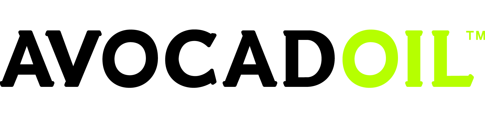
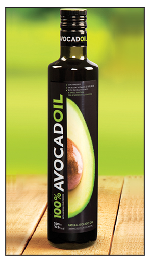
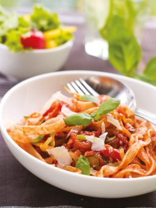

Discover the secrete of pure AVOCADOIL™
We invite you to visit us at ANUGA Cologne – 2011
Exhibition on October 08-12, 2011, on koln, Germeny, at
Hall 3.1, stand no. D-015
|

Cold-pressed from the rich, fleshy pulp of avocado pears, avocado oil is revolutionizing 21st century gastronomy.
Avocadoil™ is made from top quality fruit. The oil is cold-pressed
Fifty fresh avocado pears are needed to produce one liter of oil.
Avocadoil™ is exquisitely tasty, delicately fragrant, usefully versatile and surprisingly good for your health. What more could you ask for in a food ingredient?
Avocadoil™ can be used as a condiment or dip, for salad dressings and cold dishes, and for cooking. Some of the world’s most prominent chefs are currently endorsing Avocadoil™
|
|
A little goes a long way
|
|
Avocadoil™ boasts a delicate, smooth, fruity taste that brings out the flavor of the dish it is added to, without dominating it. Avocadoil™ has a distinct green color as well as the aroma of this exotic fruit. Its concentrated taste and texture makes it possible to achieve optimal results since a little goes a long way compared to other oils.
|
The secret is in the pressing
The quality of an oil is determined by two indices: the pressing process and the acidity level
|
First cold pressing
Avocadoil™ undergoes a brief cold pressed process that does not destroy its nutritional values. This is a purely physical process that combines low temperature pressing with a sealed system that prevents oxidation. The cold pressed process preserves the oil's quality and good taste. The result is a delicate, pure, exceptionally tasty, extra virgin quality oil (i.e. pressed only once).
|
Low acidity level
An oil's acidity level is determined by the percentage of fatty acids prone to oxidation. The lower the acidity level, the higher the quality of the oil. Lowacid oils are more delicate and do not leave an acrid aftertaste. The acidity level of cold pressed avocadoil™ is 0.2%!
|
|
|

Smoke point
An oil's smoke point is the point at which the oil begins to break down and leave a smoky residue in the in the oil and the food in which it is fried, cooked or baked. These smoke particles are detrimental both to the oil's nutritional value and culinary quality.
The smoke point of avocadoil™ is 250 degrees Celsius 437 /Fahrenheit) (the highest among all coldpressed vegetable oils). As a result, it is suitable for various cooking techniques such as sautéing, stirfrying and deep-frying.
|
VISIT our website
LIKE Avocadoil on Facebook
Try out unique Recipes
|
Avocado Oil Industries LTD. is located in Rishon Le Zion, Israel.
phone: +972-3-9509999
fax: +972-3-9698993
mail: info@avocad-oil.com
|
|

|
|
|
|
We welcome you to stay updated with Avocadoil™ through our website and facebook.
See you soon!
|